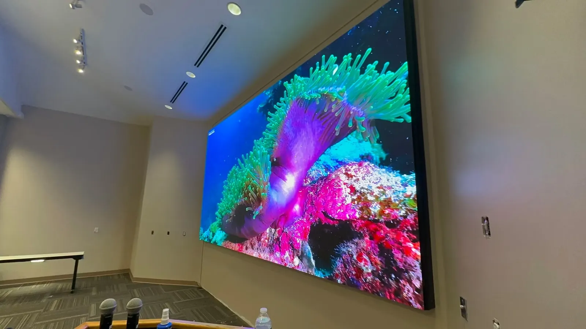
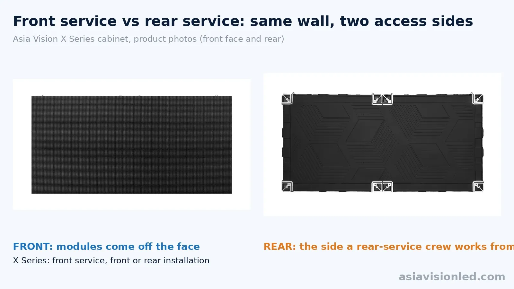
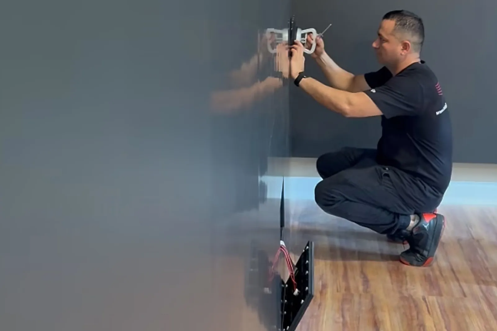

By Danny · 2026-11-09
Front service or rear service decides more than how a module comes out. It sets how deep the wall is, whether the room gives up a corridor for the life of the screen, how a technician reaches a failed power supply, and how long a repair takes. On a corridor wall it can decide whether the installation meets accessibility rules. It is also one of the few cabinet choices that cannot be changed after the steel goes up.
This guide is for AV integrators, consultants and architects specifying a fixed LED wall. It explains what each service method means in practice, how to budget wall depth, where the ADA protrusion rule bites, what a rear service corridor really costs, and how to choose. Rental cabinets are covered briefly at the end. Most rental panels are built for both.
In a front service LED display, a technician standing in front of the screen can remove a module, and usually reach the power supply and receiving card through the opening it leaves. Indoor front-service modules are commonly held by magnets and lifted off with a suction or magnetic tool. Outdoor front-service modules are often screw-fixed so they compress a gasket. In a rear service display, the technician works from behind the screen, which needs a corridor, catwalk or platform there. Dual service cabinets allow both.
Two terms are often confused. Service is where the technician works. Installation is where the installer works while mounting the cabinet. Our X Series, for example, is a front-service cabinet that can be installed from the front or the rear. A cabinet can also be front-serviceable for modules but need rear access for power cabling. Ask the supplier to state module, power-supply, receiving-card and cable access separately.
Schematic, not to scale. Rear-corridor guidance from the Leyard TWA installation guide; NEC 110.26 shown only as a reference where the authority applies it.
Figure 1 shows cabinet access points used in front and rear service.

A front service repair is quick when the design is right: find the failed module, lift it off, swap it, check calibration, and walk away. Nobody needs to open a ceiling or enter a void. That is why front service has become the usual choice for indoor fixed walls in lobbies, retail, control rooms and boardrooms.
Three details decide how good a front-service design really is:
Front service has costs too. The floor area in front of the screen must be clear while the work is done, which may mean working after hours in a shop or terminal. High walls need a lift or scaffold on the public side. And each front removal handles the visible face, so module edges and the surface finish need to survive repeated swaps. The module replacement guide covers the repair procedure itself.
Rear service keeps the face of the wall untouched during repairs. The technician works in a space behind the screen and can usually reach modules, power supplies and cards without anyone in the room noticing. That is valuable in broadcast studios, venues that run all day, and large outdoor billboards with a walk-in structure.
The space has to be real, though. Leyard's installation guide for its rear-access TWA Series asks for "enough space for one to two workers to move and work freely" behind the cabinets. Where the authority having jurisdiction treats the wall's power gear as electrical equipment that may be serviced while energised, NFPA 70 (NEC) 110.26 sets a working-space depth of 900 mm (3 ft) for systems up to 150 V to ground. It also requires a width of at least 762 mm (30 in) and headroom of at least 2.0 m (6½ ft). Whether 110.26 applies to a given LED wall is the inspector's call. Many designers use it as a sensible floor for a service corridor anyway.
That corridor is not free. An 8 m wide wall with a 900 mm corridor takes 7.2 m² of floor area out of the room for as long as the screen is there. In a flagship store, a hotel lobby or an airport landside area, that floor has a rental value. Add the corridor's lighting, a door, a power outlet, and a commitment from the building owner never to use it as storage. A blocked rear corridor turns a rear-service wall into an unserviceable one.
Figure 2 shows service access during an install.

Installed depth is the cabinet depth plus the bracket or frame, cable bends, any ventilation gap and the finished trim. Published cabinet depths for current panels sit roughly between 66 mm and 94 mm before any of that is added:
Cabinet depth only. Installed depth is larger once the mount, cable bends and ventilation gap are added.
In the United States, the 2010 ADA Standards for Accessible Design (§307.2) limit objects whose leading edge is more than 27 in (685 mm) and not more than 80 in (2030 mm) above the floor to a horizontal protrusion of 4 in (100 mm) into a circulation path. An LED wall in a corridor, concourse or lobby path often has its lower edge in that band. A 90 mm cabinet on a 40 mm bracket is already 130 mm proud of the wall.
The usual answers are to recess the wall into the building so the face sits within 100 mm of the finished surface, or to bring the bottom edge down to 27 in or below. You can also add a cane-detectable element at floor level, where the local code and the access consultant accept it. Rear service makes recessing harder, because the corridor sits behind the recess. This is one of the strongest reasons front service dominates corridor and lobby walls. Other countries have their own rules, so check the local access standard. The dvLED guide for architects and the wall preparation guide cover the building side.
Neither option is cheaper in every project. The difference is where the money goes over the life of the wall:
| Cost line | Front service | Rear service |
|---|---|---|
| Building works | Shallow mount, often a recess to meet protrusion limits | Corridor, door, lighting and power behind the wall |
| Floor area | None given up permanently | Corridor area lost for the life of the wall |
| Access equipment | Lift or scaffold on the public side for high walls | Catwalk or platforms behind tall walls |
| Repair labour | Fast module swaps; power-supply access depends on design | Fast if the corridor is clear and lit |
| Downtime and disruption | Work happens in the public space, often after hours | Work can happen while the room is in use |
| Tools and spares | Service tool, spare modules and spare magnets or screws | Spare modules; corridor kept clear |
When you build the total cost of ownership model, enter these as separate lines rather than one "maintenance" figure. A rear-service quote that looks cheaper per square metre can lose that advantage once the corridor's floor area is priced.
Outdoors, the choice usually follows the structure. A screen on a building facade, a shopfront or a high wall has no space behind it, so front maintenance is the practical option. Our D-PRO outdoor series (P5–P10) uses a front-maintenance die-cast module for this reason. A large roadside billboard on its own steel structure often has a walk-in space behind the face. That makes rear service natural, and it keeps technicians off the public side of a road.
For outdoor front service, the gasket is opened every time a module comes out. Ask how the seal is re-seated, whether the gasket is replaceable, and whether the IP65 rating applies after a module swap, not only when the screen leaves the factory. The IP rating guide explains front and rear protection. The structural load guide covers the steel.
Rental cabinets are built for both directions because the stage decides. A ground-stacked wall against a backdrop may only be reachable from the front, while a flown wall is easier to service from behind. Published rental products reflect this. Several carbon-fiber and aluminium rental cabinets list "front and rear service", and ROE's Carbon series lists front service on its outdoor CB5 and rear service on its indoor CB3. For fixed installs, dual service is useful when the building might change, but it usually costs more than a single-direction cabinet. Choose it deliberately rather than by default. For rental frame materials, see our carbon fiber vs aluminium rental cabinet guide.
Use the flow below at the concept stage, then confirm the choice against the site survey and the cabinet drawing.
First-pass guide only. The site survey and cabinet drawing decide.
In short: if there is no permanent, accessible space behind the screen, or the owner will not keep it clear, choose front service and design the mount to meet the protrusion limit. If there is a real corridor that will stay clear, rear or dual service is worth pricing, especially where repairs must happen during opening hours. The site survey guide lists what to measure before you decide.
Our fixed-install range includes front-maintenance options for indoor and outdoor walls:
| Series | Use | Service, from the product page |
|---|---|---|
| X Series | Indoor premium: COB, SMD or GOB modules in one cabinet system; 500 × 500, 250 and 1000 × 500 mm | Front service, front or rear installation |
| COB CV-PRO | Indoor fine-pitch COB, ultra-thin | Supports front maintenance |
| D-PRO | Outdoor fixed SMD, P5–P10 | Front maintenance, die-cast module |
COB modules are made by bonding bare chips straight to the board. There is no SMT placement step, and the sealed face is easy to clean after repeated front-service handling. Asia Vision runs 8 IC production lines and 7 SMD production lines in Shenzhen. Control systems are NovaStar by default, with ColorLight as the alternative and MQ available where a project already uses it.
Every order carries a 3-year standard warranty and leaves our Shenzhen factory within 18 days of order confirmation (18-day factory dispatch). There is no minimum order quantity and no tooling fee. Certifications, including UL and ETL, are applied for to suit each customer's market. Send us the wall size, the space behind it and the mounting surface, and we will recommend the service method and supply the cabinet drawing for your installed-depth check.
Send the wall size, the space behind it and the mounting surface. We will recommend the service method and send the cabinet drawing for your depth check. Email info@asiavisionled.com or message us on WhatsApp at +86 172 7666 5558.
Request Installation AdviceChat on WhatsApp